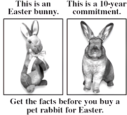

A Word of Caution
Not for Easter
Rabbits are a 8–10 year commitment. Please think carefully before giving one as a gift.
Every spring, animal shelters fill with rabbits surrendered weeks after Easter. Rabbits are complex animals with specific dietary, medical, and social needs — they are not low-maintenance starter pets.
Before bringing a rabbit home, ask yourself:
- Can you commit to 8–10 years of care?
- Can you afford $80+/month in food, litter, and vet costs?
- Do you have a rabbit-savvy vet nearby?
- Is everyone in the household on board?
If the answer is yes — a rabbit can be a deeply rewarding companion. If not, consider supporting your local shelter instead.
